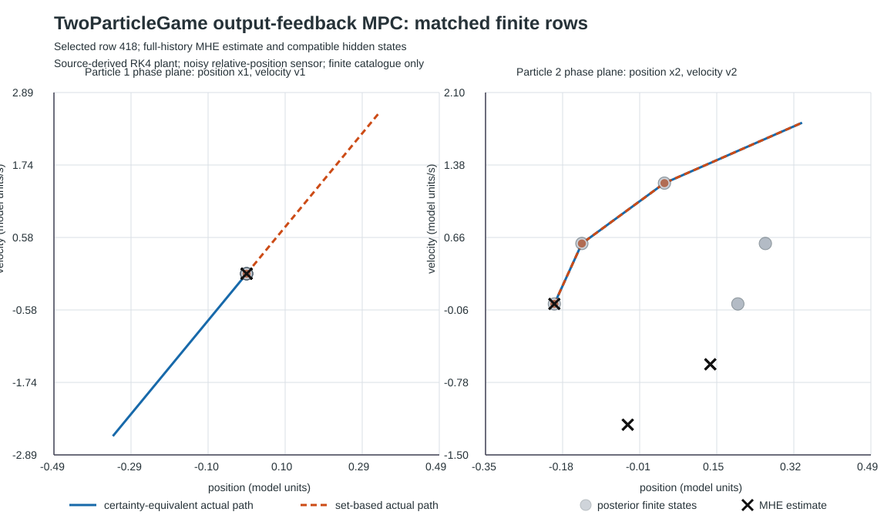

Finite noisy-observation adaptation of the RL differential-game environment. See pinned source and its Apache-2.0 license.

| Controller | Worst terminal gap | Capture misses | Rows |
|---|---|---|---|
| Certainty-equivalent | 0.680600659 | 0 | 864 |
| Set-based robust | 0.420600659 | 0 | 864 |
| Complete finite-history reference | 0.260000000 | finite optimum | all listed branches |
Finite catalogue only; no continuous-noise or global output-feedback guarantee. The receding planners do not branch on future observations. Raw result · Figure data · Method and reproduction · Reachability and minimax sets report.